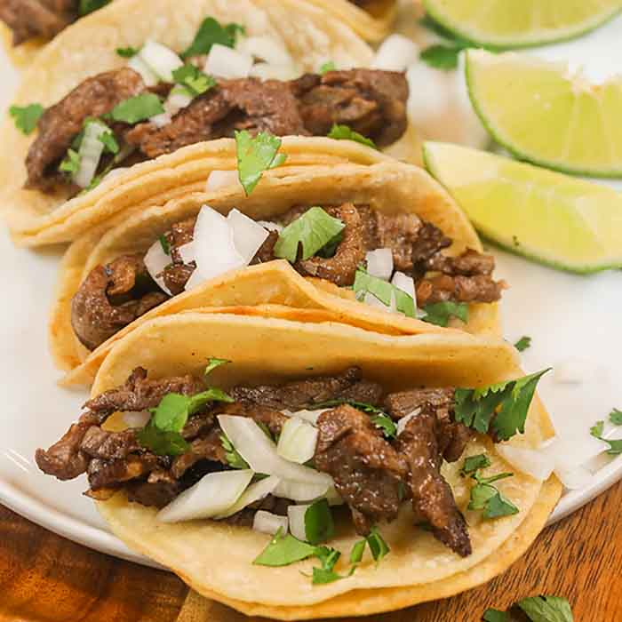

Fire Tacos

Description
One of the very first dishes I learned to cook were tacos. My older brother was a fitness fanatic; he began dragging me to the gym every once in a while, and the reward would be him cooking up some BOMB-ASS tacos. After many anxious nights, I finally took command of the kitchen and helped him make a batch. Like a reward for completing an NPC's quest, he gave me his secret spice mixture.
As any good younger brother would, I will now spill that secret spice combination to the Internet as part of my learn-to-code practicum.
Ingredients
- 1lb Impossible beef (it's better for the environment ;^) )
- 1 whole yellow onion
- 2 bell peppers
- 1 ice cold Miller High Life
- Olive oil
- Salt
- Pepper
- Cumin
- Smoked paprika
- Adobo powder
- Chili powder
- Ground cayenne pepper
- Garlic powder
- Red pepper flakes
- Small corn tortillas
- One sprig fresh cilantro
- One lime
Steps
- Thaw the Impossible beef for 15-20 minutes.
- Dice the onion and peppers. Keep separate for now.
- Begin heating two pans on the range: one medium-sized saucepan with olive oil, and one large empty saucepan.
- Add the onions to the pan with olive oil, sautee for a few minutes until the onions begin to sweat.
- Add the peppers to the pan with the onions; shake occasionally and monitor until cooked and fragrant. Set aside once done.
- In the other pan, add the package of Impossible beef, breaking into a fine ground with a spatula.
- Once the meat is finely separated and ground, pour the beer into the skillet until the meat is covered (about 2/3 of a bottle). Enjoy the rest!
- Cook for a few minutes, stirring occasionally, until the meat is sauteeing in the beer.
- Add the spices in equal proportion, going heavy with the cumin and chili powder while going easy on the salt and garlic powder.
- Continue cooking until the meat is thoroughly browned. Be sure to scrape the fond off the pan as it cooks, as that adds extra flavor.
- Heat the tortillas, either in a small skillet or in a toaster oven on low heat.
- Add the onions and peppers to the pan with the meat to finish. Let sit for a few minutes to cool.
- Take two tortillas, placing one atop the other. Scoop the meat, onions, and peppers onto the tortillas.
- Mince the cilantro and sprinkle over the tacos. Half the lime and squeeze over the tacos.
Return to Home